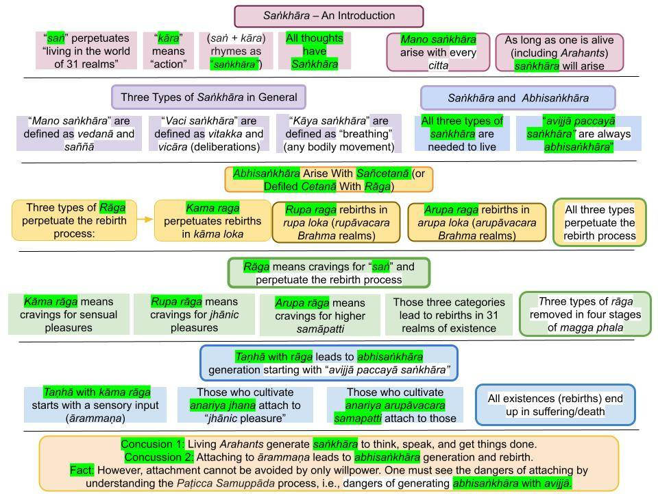

It is critically important to understand what is meant by “saṅkhāra.” Without getting a basic idea of saṅkhāra, one cannot hope to understand Paṭicca Samuppāda, i.e., Buddha's teachings.
January 26, 2023; rewritten March 26, 2023

Download/Print: "7. Saṅkhāra – An Introduction"
Saṅkhāra - Various Types
1. Saṅkhārās arise in mind in response to sensory inputs (ārammaṇa.) They are "a mixture of feeling/perception/intention" arising based on the ārammaṇa AND one's gati. Those arising automatically (without thinking) are "citta/mano saṅkhāra." Then we may start thinking about the ārammaṇa with "vaci saṅkhāra" and may speak out with them too. If we start bodily actions, those involve stronger kāya saṅkhāra. That is one primary division of saṅkhāra. All living beings (including Arahants) generate them.
- Our thoughts, speech, and actions can be defiled/corrupted by greed (lobha), anger (dosa), or ignorance (moha); those would fall into apuñña/akusala (immoral) saṅkhāra. They can bring harmful consequences in the future; thus, the prefix "abhi" is attached too, i.e., they are apuñña/akusala abhisaṅkhāra.
- The opposites or the moral types with generosity, compassion, and wisdom can bring good/beneficial results in the future, and they are puñña abhisaṅkhāra.
2. For example, if we hear a brief loud sound, we may be annoyed but not generate anger; that involves only mano saṅkhāra. However, if that loud noise persists, we may get angry and start (internally) cursing the person causing the noise; if the sound persists, we may speak out with anger; both those actions involved vaci abhisaṅkhāra. If we then confront the "sound maker," we may hit that person with anger, and that kamma is done with kāya abhisaṅkhāra.
- Saṅkhārās without the "abhi" prefix do not have kammic consequences in the future, i.e., they do not have associated kammic energies.
- Therefore, “avijjā paccayā saṅkhārā” should be explained as “avijjā paccayā abhisaṅkhārā” because saṅkhārā can arise in a Buddha or an Arahant, yet abhisaṅkhārās (due to avijjā) do not arise in them.
- In Paṭicca Samuppāda, even though the uddesa version is "avijjā paccaya saṅkhāra," those due to avijjā are ALWAYS abhisaṅkhāra. That is why it is not a good idea to translate verses in the suttas mechanically, word by word. That lead to contradictions and confusion; see "Distortion of Pāli Keywords in Paṭicca Samuppāda."
- Many suttas (especially discussing deeper concepts) are in the "utterance or uddesa" format. Translating them word for word can lead to confusion. They must be explained (niddesa.) Sometimes long explanations with examples and analogies (paṭiniddesa) are needed. See, "Sutta Interpretation – Uddēsa, Niddēsa, Paṭiniddēsa."
- Let us first look at the "definitions" of the three main types of saṅkhāra.
Three Types of Saṅkhāra Responsible for Actions, Speech, and Thoughts
3. There are succinct statements in the "Cūḷavedalla Sutta (MN 44)" on the types of saṅkhāra generated in mind:
“Tayome, āvuso visākha, saṅkhārā—kāyasaṅkhāro, vacīsaṅkhāro, cittasaṅkhāro”ti.
– There are three types of saṅkhāra – kāya saṅkhāra, vacī saṅkhāra, citta saṅkhāra.
“Katamo panāyye, kāyasaṅkhāro, katamo vacīsaṅkhāro, katamo cittasaṅkhāro”ti?
– What are kāya saṅkhāra, What are vacī saṅkhāra, What are citta saṅkhāra (or manō saṅkhāra)?
“Assāsapassāsā kho, āvuso visākha, kāyasaṅkhāro, vitakkavicārā vacīsaṅkhāro, saññā ca vedanā ca cittasaṅkhāro”ti.
– Assāsa passāsā are kāya saṅkhāra, vitakka vicāra are vacī saṅkhāra, saññā and vedanā constitute citta saṅkhāra.
“Kasmā panāyye, assāsapassāsā kāyasaṅkhāro, kasmā vitakkavicārā vacīsaṅkhāro, kasmā saññā ca vedanā ca cittasaṅkhāro”ti?
– Why are the three types of saṅkhāra categorized in that way?
“Assāsapassāsā kho, āvuso visākha, kāyikā ete dhammā kāyappaṭibaddhā, tasmā assāsapassāsā kāyasaṅkhāro. Pubbe kho, āvuso visākha, vitakketvā vicāretvā pacchā vācaṃ bhindati, tasmā vitakkavicārā vacīsaṅkhāro. Saññā ca vedanā ca cetasikā ete dhammā cittappaṭibaddhā, tasmā saññā ca vedanā ca cittasaṅkhāro”ti.
– Assāsa passāsā (breathing in and out) is associated with the body (movements). Thus, assāsa passāsa is kāya saṅkhāra.
– Vitakka/vicāra arise before speech “breaks out,” i.e., one consciously thinks/analyzes (vitakka/vicāra ) before speaking. Therefore, vitakka/vicāra are vacī saṅkhāra.
– Saññā and vedanā are associated with any citta. Thus, Saññā/vedanā are citta (mano) saṅkhāra.
Assāsa Passāsa Are not Abhisaṅkhāra
4. "Assāsa passāsa" in verse "assāsa passāsā kāya saṅkhārā" does refer to the type of saṅkhāra involved in "breathing in out."
- Even though we don't realize it, breathing in and out happens via citta vithi, i.e., "thoughts" if we translate citta as "thought." But these are "weak citta" without any javana power. Such weak citta vithis run through our minds even while we are sleeping. Now, breathing involves moving body parts, and any bodily movement MUST involve citta because the mind controls the body.
- Breathing, walking, running, or any bodily movement that does not arise with greed, anger, or ignorance in mind are kammically-neutral saṅkhāra. They are NOT abhisaṅkhāra.
5. Those definitions in #3 above are for saṅkhāra in general. Whether they become abhisaṅkhāra or not will depend on whether or not greed (lobha), anger (dosa), or ignorance (moha) will be involved.
- For example, saññā and vedanā arise in cittās of Arahants, too. Thus, manō saṅkhāra arising in Arahants are not abhisaṅkhāra. However, if vedanā turn to samphassa-jā-vedanā, then they definitely become abhisaṅkhāra.
- Vitakka/vicāra can be simply stated as "deliberations." When an ārammaṇa comes in, one may start internally debating how to proceed. An example is given in #6 below. Those deliberations can be immoral, moral, or neutral and must be handled based on the context. However, when specifically referred to as savitakka/savicāra, those are "good vaci saṅkhāra" that, for example, arise in an Arahant.
- For details, see “Vacī Saṅkhāra – Saṅkappa (Conscious Thoughts) and Vācā (Speech),” "Correct Meaning of Vacī Sankhāra," and "Vitakka, Vicāra, Savitakka, Savicāra, and Avitakka, Avicāra."
Saṅkhāra and Abhisaṅkhāra
6. Understanding how they arise makes it easier to remember the functions/deployment of the three main types of saṅkhāra mentioned above. Either good or bad types of abhisaṅkhāra come into play when we attach to sensory input (ārammaṇa) and greed, anger, or ignorance arise in mind.
- Let us consider an example. Suppose person X is watching TV. X is just watching a "bland program." But then the program switches to a commercial showing a beautiful half-naked actress in a recently released movie. That automatically leads to lustful thoughts in X, and he starts watching it with interest. Those initial thoughts of lust arise automatically due to his hidden defilements (kāma rāga anusaya.) Those are citta/mano abhisaṅkhāra arising automatically due to his character/habits (gati) to be aroused/enticed by such visuals.
- Mano abhisaṅkhāras arise automatically according to gati and are the weakest form of abhisaṅkhāra.
- Now he starts generating lustful thoughts consciously; here, he is "talking to himself," thinking about how nice it would be to watch the movie; these are the "deliberations" or "vitakka/vicāra" mentioned in #5 above. Those are a form of vaci abhisaṅkhāra. He calls out to his friend to come and see the commercial. His speech here is also vaci abhisaṅkhāra.
- Both watch the commercial while talking excitedly about the actress and the movie and decide to go to the movie. Then they get dressed and drive to the movie theater. All those bodily actions are kāya saṅkhāra. Furthermore, since the root cause of those bodily actions is lust in mind, they are kāya abhisaṅkhāra.
- Vaci and kāya abhisaṅkhāra are more robust since they arise in javana citta, with conscious thinking.
7. The types of abhisaṅkhāra in #6 above are not strong enough to directly cause a specific rebirth. However, they do generate kammic energy that can bring vipāka in kāma loka.
- But these types of lust-induced abhisaṅkhāra can grow and lead to committing rape, for example. That specific kamma can lead to an unfortunate rebirth (as an animal, for example.)
- I hope that explains the fundamental difference between saṅkhāra and abhisaṅkhāra.
- Another way to understand: abhisaṅkhāra involves javana citta, which are strong citta that arises with greed, anger, or ignorance (about moral implications.)
Cetanā and Sañcetanā
8. In the “Nibbedhika Sutta (AN 6.63)“, the Buddha declared, “cetanāhaṁ, bhikkhave, kammaṁ vadāmi.” Thus, what determines the type of kammā is the cetanā or the “intention.”
- If the "intention" does not involve lobha, dosa, or moha (avijjā), it is only a cetana or "intention" to get something done. Here, kamma done is just an action without kammic consequences. For example, if one walks to the kitchen to get a glass of water, that is done with a neutral cetana; the "intention" is to quench the thirst. It is NOT a sañcetanā.
- A cetana becomes a sañcetanā (sañ + cetanā) if it involves "sañ" or lobha, dosa, moha (avijjā.) See "San – A Critical Pāli Root" and "Details of Kamma – Intention, Who Is Affected, Kamma Patha."
9. There is a detailed analysis (niddesa version) of Paṭicca Samuppāda in "Vibhaṅgapararana" (the Tipiṭaka Commentary.) See "Paṭiccasamuppādavibhaṅga."
- There it is explained what is meant by "avijjā paccayā saṅkhārā”: It says, "Kāya sañcetanā kāyasaṅkhāro, vacī sañcetanā vacīsaṅkhāro, mano sañcetanā citta (mano) saṅkhāro. Ime vuccanti “avijjā paccayā saṅkhārā”."
- That means saṅkhāra that arise with avijjā have "sañcetanā" or "defiled cetanā" or "defiled intentions." Those are abhisaṅkhāra.
- Therefore, only abhisaṅkhāra with sañcetanā are included in “avijjā paccayā saṅkhārā.”
10. In the "Sañcetanā Sutta (SN 27.7)" the Buddha stated, "rūpa sañcetanāya chandarāgo, cittasseso upakkileso."
- That means "attachment/craving (chanda rāga) for rūpa" lead to the arising of defiled intentions (sañcetanā.) Defiled intentions are those with greed, anger, and ignorance.
- Then that verse is repeated for attachment to sounds, smells, tastes, touches, and dhammā (dhamma sañcetanā.) Note that dhammā are ārammaṇa that come directly to the mind; see "Dhamma and Dhammā – Different but Related."
Example
11. Let us take an example. If we see someone walking with a knife, we would only know that he is generating kāya saṅkhāra because moving the body involves kāya saṅkhāra. We would not know whether they are kāya abhisaṅkhārā until we see what he does with that knife.
- If he carries the knife intending to hurt/kill someone, then sañcetanās come into play, and he is engaged in “avijjā paccayā saṅkhārā” where the saṅkhārā is an akusala abhisaṅkhāra of the specific type of kāya abhisaṅkhārā.
- But if he just bought that knife and is taking it home, it is just a cetana, NOT a sañcetanā. Thus it is just a kāya kamma (bodily action) done with kāya saṅkhārā that DOES NOT belong to “avijjā paccayā saṅkhārā.”
- Therefore, saṅkhārā with neutral cetanā lead to neutral kammā; they do not have future kammic consequences. But abhisaṅkhāra with sañcetanā are done with “avijjā paccayā saṅkhārā,” and they can bring kamma vipāka in the future.
- Any saṅkhāra (kāya, vaci, or mano) can be included in the category of “avijjā paccayā saṅkhārā” ONLY IF one's intention involves lobha, dosa, moha (avijjā.)
Saṅkhāra and Kamma - Closely Related
12. Saṅkhārās are closely related to kammā. "Kamma" is typically translated as "action," but all kammā have their origin in mind.
- Just like there are citta/mano, vaci, and kāya saṅkhāra, there are mano, vaci, and kāya kamma. Furthermore, they are closely related. Mano saṅkhārās give rise to mano kammā, vaci saṅkhārās give rise to vaci kammā, and kaya saṅkhārās give rise to kāya kammā.
- Now we can see that there are apuñña/akusala kamma and puñña/kusala kamma.
13. Paṭicca Samuppāda explains how various types of abhisaṅkhāra lead to corresponding results (vipāka) in the future.
- Such vipāka can materialize in the current life or future lives. Strong kammā (with strong abhisaṅkhāra) lead to good or bad future births via Uppatti Paṭicca Samuppāda; see "Uppatti Paṭicca Samuppāda (How We Create Our Own Rebirths)." Other, weaker kammā can bring their vipāka during a lifetime, either in this or a future life, which is explained in "Paṭicca Samuppāda During a Lifetime."
- The critical issue is that some kammā (actions) not merely get the job done at that time but can lead to consequences in the future, even in future lives. Those having a "carry-over" effect are the first two types of moral and immoral kammā taking place via abhisaṅkhāra.
Manōpubbangamā Dhammā..
14. The Buddha taught that everything arising in this world originates in our thoughts, speech, and actions. It may take a lot of reading to comprehend that fully, but that is the only way to learn Buddha Dhamma.
- That principle is embodied in the Dhamma verse, "Manōpubbangamā Dhammā.." Here, "mano" represents the mind, and dhammā (with a long "a") means those kammic energies that bring vipāka (including rebirth). I have discussed that in various ways; for example, "Kamma and Paṭicca Samuppāda."
- Those born and growing up in the Western world have a "materialistic worldview" from their upbringing. It is difficult for some to understand how "solid matter" (say, our physical bodies) can have its origins in mind. However, even though I now live in the United States, I was raised in a practicing Buddhist family in Sri Lanka. It took a long time, but I have now realized the necessity to explain this "mind-body" connection in detail, especially to a Western audience.
- Our thoughts (specifically abhisaṅkhāra) may not directly lead to the creation of ALL "solid matter." It is a subtle but quite logical/scientific process. I discussed that in the "Origin of Life" series, but I now think I must explain some basic concepts in detail.
15. All posts on saṅkhāra at "Saṅkhāra – Many Meanings." Discussing all aspects of saṅkhāra in one or two posts is impossible. Please make sure to read them and fully understand saṅkhāra. That will go a long way in comprehending Paṭicca Samuppāda.
- All the posts in this new "series of review posts with charts" at "Buddhism – In Charts."